Emily Chen
Mentor: Professor Andre Schleife
National Center for Super Computing Applications SPIN project
Univerity of Illinois at Urbana Champaign
The goal of this project has been to observe material’s optical properties through raytracing and to automate and virtualize to make the program more user-friendly and accessible. We would love to see this program assist researchers in materials design by allowing them to alter the spectral and absorption until the desired optical properties of the materials is achieved. Because the engine we use is a physically based rendering engine, the resulting images produced will reflect the ideal material’s optical properties.
We have been utilizing and experimenting with Blender as a 3D modeling engine, and LuxRender as the physically based rendering engine. In order to automate the process, we have currently created python scripts which can create different scenes with different objects to apply the material data to. We have been running all of the scripts on the Campus Clusters at the University of Illinois at Urbana-Champaign, allowing most of the runs to render for approximately four hours.
We ran several sweeps to see how the materials’ optical properties would change as different traits of the materials are changed. The first run was varying the physical lengths of the materials to see how length would be rendered though Blender and LuxRender. This, however, seemed to make no change in the light transmission through the material, even though we expected that as the length would increase, the light transmission would decrease. We placed the light source directly behind the material, while changing the length in metric units in Blender. However, the results remained constant, as can be seen below in some of the images from the runs.
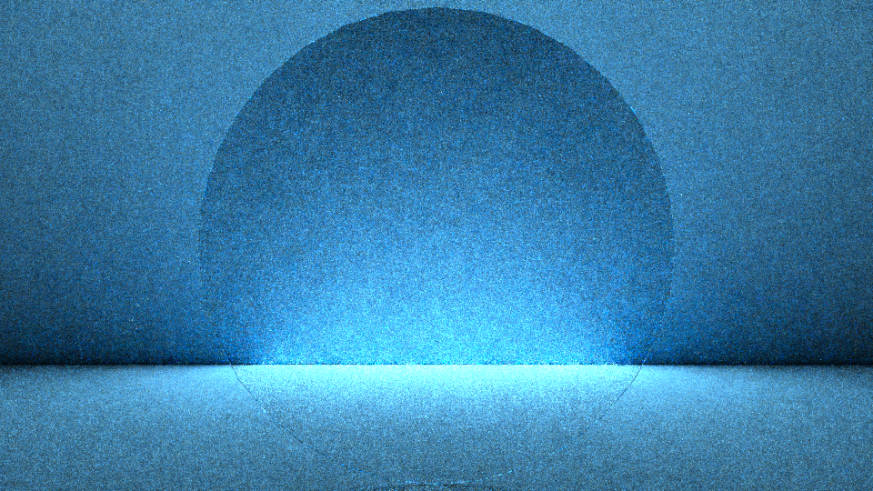
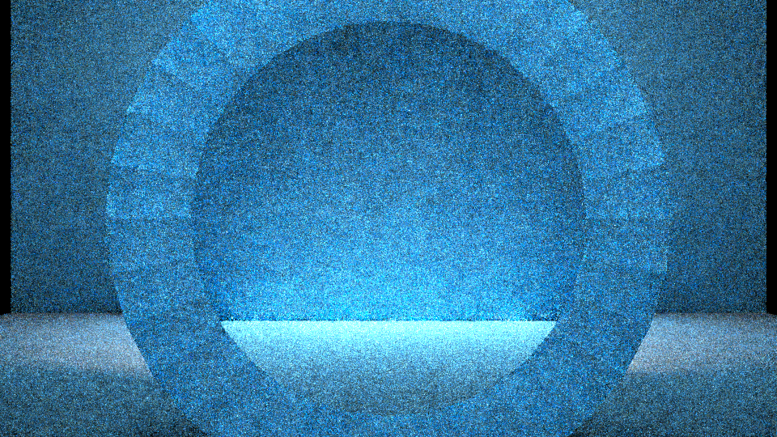
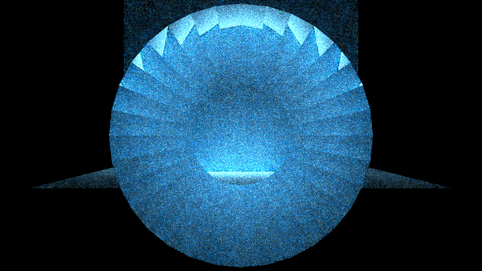
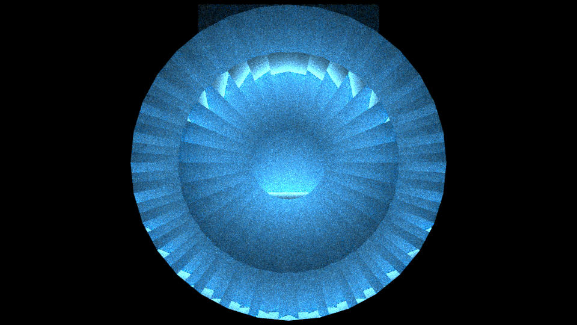
We also created Python scripts that can automatically generate absorption spectrum .dat files. This allows researchers to create the input .dat files easily to render a large range of values for their specific sweep. We have been using the following equations to generate the .dat files, and the resulting .dat files give the wavelength (nm) and the absorption spectrum at that specific wavelength (1/cm):
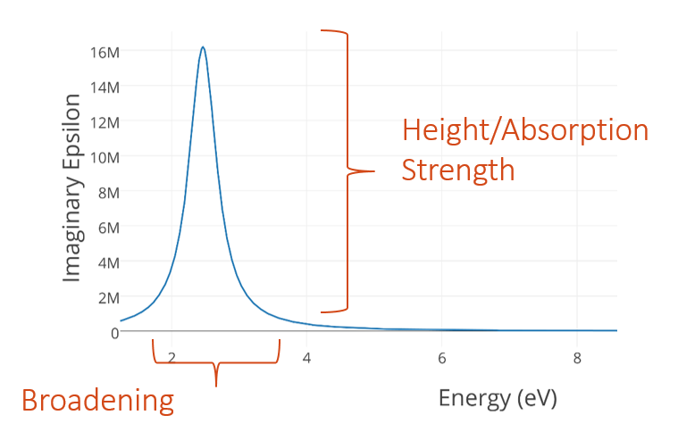
We varied the parameters in the equations to see how changing specific variables that contribute to the absorption spectrum data. The renderings from these runs proved to be successful, as a clear change in a material’s optical properties can be seen, and results from these tests will be shown below. We are working on expanding this and automate the entire process of scene creation, .dat file generation and rendering. The hope is to only require initial sweep range of a variable, and parameter values to be able to create a specific scene with a range of absorption inputs. The absorption spectrum range to test can then be seen and estimated through the renderings, as the only range of interest is while the material’s optical properties' changes are observable. The below renderings are from a run where the height and peak position were fixed, but the broadening value was swept from 0 to 1.35 eV. The optical property change is evident at first, but begins to decrease as the broadening value increases.
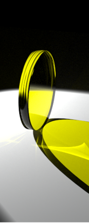 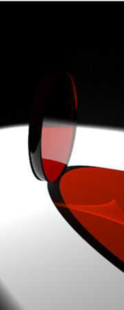 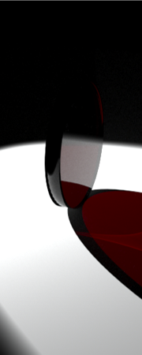 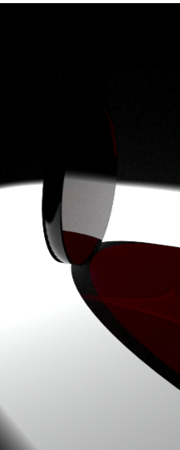
The most current run has been experimenting with the surface roughness of materials to see how this changes materials’ optical properties. We have been trying to find a consistent way of breaking up the geometries on the object’s surface in Blender. This has included creating smaller sub-surfaces, triangulating the face of lens and increasing the triangulation count. However, the challenges with this is the limitations that the computer’s memory places on how many geometries can be on the surface of a material. The creation and usage of more geometries requires more memory, and thus crashes the computer on which our tests have been running. The next step is to alter the subsurface and triangulation values in the Python scripts and to run the renderings on the high memory nodes on the Campus Cluster.
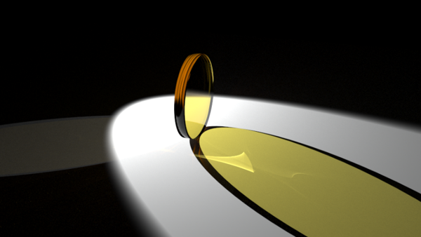
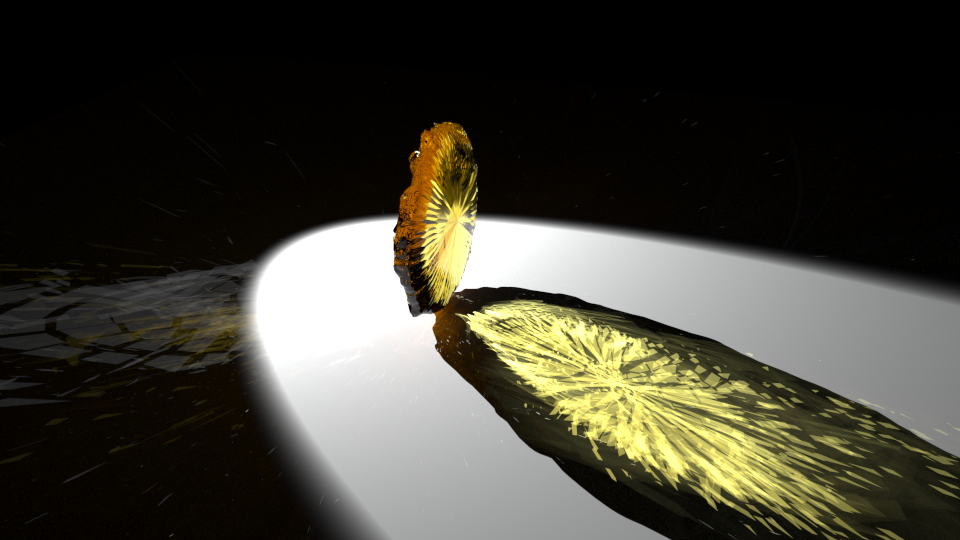
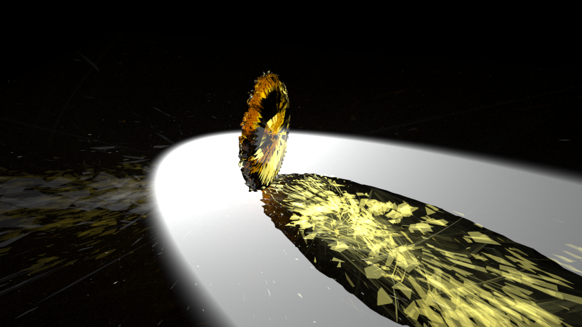
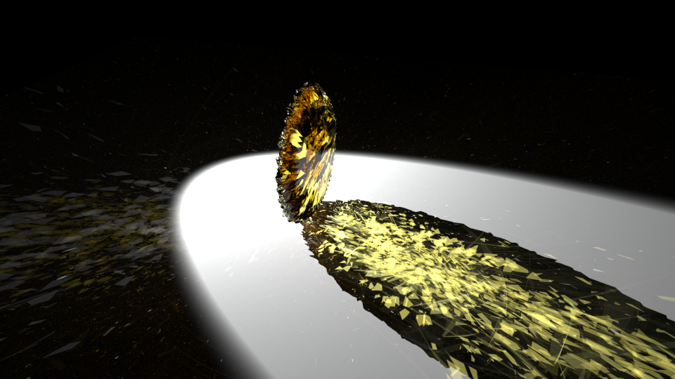
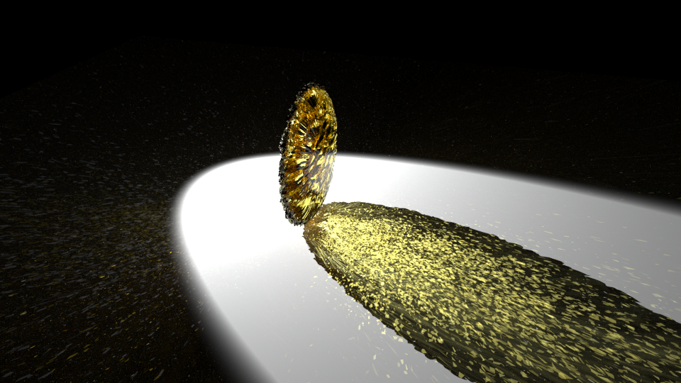
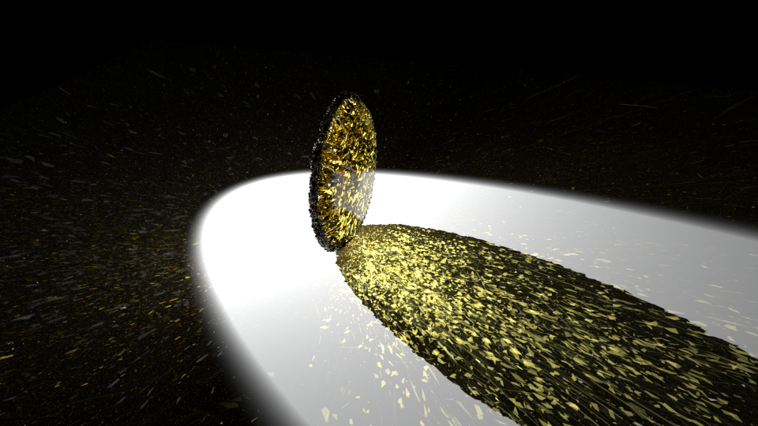
Our future goals for this project include creating a web interface that allows individuals to remotely use the program to work on materials design and to create renderings of materials with specific optical properties. We are continually working towards fully utilizing the capabilities of Blender, LuxRender and the Campus Cluster to be able to create accurate renderings of materials for potential use in computerized materials design work.
Software used: